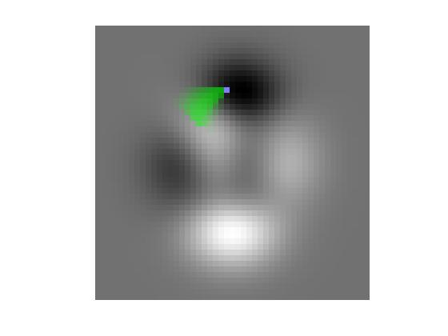

visMap
Visualize influence map, dependence map, or upslope area on a DEM
Contents
Description
visMap(M, E) displays an influence map, dependence map, or upslope area matrix M by superimposing it on a DEM matrix E.
visMap(M, E, BW) displays an influence or dependence map M superimposed on a DEM image E. BW is a binary image specifying the starting or ending DEM locations for the influence or dependence map, respectively. Starting or ending pixel locations are shown in blue, and pixels with nonzero influence or dependence values are shown in transparent green.
visMap(M, E, i, j) uses vectors i and j as row and column coordinates for the starting DEM locations.
Example
E = peaks; R = demFlow(E); T = flowMatrix(E, R); D = dependenceMap(E, T, 12, 24); visMap(D, E, 12, 24)